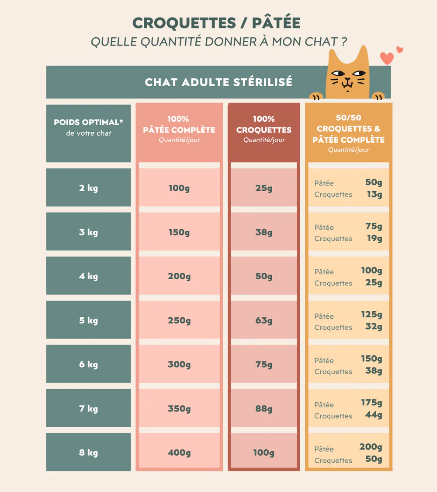
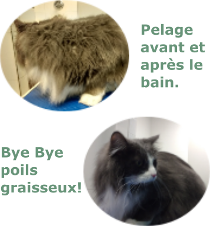

Alimentation
Une alimentation équilibrée est essentielle pour la santé et le bien-être de votre chat. Assurez-vous de lui fournir une nourriture adaptée à son âge, à son poids et à ses besoins nutritionnels. Les chats ont également besoin d'un accès constant à de l'eau fraîche.
Toilettage
Le toilettage régulier est important pour maintenir la propreté et la santé de votre chat. Cela comprend le brossage de son pelage, le nettoyage de ses yeux et de ses oreilles, ainsi que la coupe de ses griffes si nécessaire.
Visites chez le vétérinaire
Les visites régulières chez le vétérinaire sont essentielles pour détecter et prévenir les problèmes de santé. Assurez-vous de maintenir à jour les vaccinations de votre chat et de le faire examiner au moindre signe de maladie ou d'inconfort.